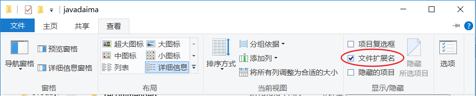

众所周知Java是一门编程语言，编程语言就是用来编写软件的。那么使用Java到底能用来编写什么软件呢？你所熟知的很多软件都可以用Java来编写，例如：QQ、迅雷、淘宝、京东等等，那么Java比较擅长什么呢？也就是说我们将来从事Java开发工程师工作到底要编写什么类型的软件呢？
答案是：
互联网：电商、P2P等等；
企业级应用：ERP、CRM、BOS、OA等等。
互联网类软件大家都比较熟悉，因为大家生活都可以接触得到。而企业级应用都是为大型企业量身定做的软件，用于工作中，所以大家可能不太了解。现在大家只需对Java开发工程师工作有个大致的了解即可。
在java基础中我们会学习Java的基础知识，即JavaSE（标准版）部分。学习完JavaSE并不能开发大型项目。
在后面我们会学习Java的高级知识以及整个Java生态圈，即JavaEE（企业版）部分。学习完JavaEE部分就可以开发各种大型项目了。
编写源文件后就需要开始编译操作了，但在Windows操作系统中编译、运行都需要了解常用DOS命令，所以下面我们来学习一下常用DOS命令（DOS命令是Windows操作系统包含的知识）。
DOS命令是在DOS控制台中使用的命令，弹出DOS控制台的方法是：win+R，然后输出cmd，是不是看起来有点熟悉，没错，就是校验JDK安装是否成功是弹出的小黑屏。
DOS命令有很多，我们不需要学习所有DOS命令，只需要学习我们Java中要用到的常用DOS命令，内容如下：
清屏：cls；
当DOS控制台内容过多时，可以使用清屏命令，等同与“擦黑板”；
例如：C:\ >cls，然后按回车键。
切换盘符：:；
默认情况下我们是在C盘中，如果想去其他盘符可以使用该命令；
例如：C:\ >E:，然后按回车键就到了E盘下。
进入指定目录：cd；
当我们想进入某个目录时可以使用该命令；
例如：D:\>cd develop，这样就进入了D:\develop目录，当然你需要保证这个目录是存在的；
例如：D:\>cd develop\Java，这样就进入了D:\develop\Java目录。
返回上一级目录：cd..；0
当你需要返回到上一级目录时可以使用该命令；
例如：D:\develop\Java>cd..，然后按回车，就会返回到D:\develop目录下。
返回盘符根目录：cd\；
当需要返回到当前盘符根目录下可以使用该命令；
例如：D:\develop\Java>cd\，然后按回车，这样就返回到D:/目录下了。
显示当前目录下的文件和子目录信息：dir；
当需要查看当前目录下所有文件和子目录信息时可以使用该命令；
运行应用程序：程序完整名称 参数
当需要运行某个应用程序时可以使用该命令；
例如要运行记事本程序时：D:\>C:\windows\notepad.exe，这样就打开了记事本程序，这与你到C:\windows目录下双击该程序图标的效果相同，因为该程序支持双击运行；
还可以省略“.exe”后缀，例如：D:\>C:\windows\notepad，效果同上；在开始学习Java编程之前，我们首先需要安装Java开发环境（JDK：Java开发工具包 Java Development Kit）。
你可能会问：“我们为什么要安装JDK呢”，其实任何事物都需要有他的最基本的生存环境，就像人类也需要最基本的生存环境（天、地、水、空气……）。开发Java程序也不能例外，它也需要最基本的“生存环境”，就是Java开发环境（JDK）。
至于JDK中都包含了什么东西，现在还不是讲解的时候。我们现在的任务就是马上把它下载、安装，并校验安装是否成功。
我使用的JDK版本是JDK7，当前最新版本是JDK13。
JDK的下载和安装请各位严格按照我另外一篇随笔《JDK下载安装》中的要求操作，如果没有按照要求操作可能会引起意想不到的问题。这里就不再赘述！
下面我们来聊聊如何校验JDK安装是否成功的方法。你无需了解为什么要这么做，只需要严格按照下面的步骤操作即可：
在键盘上按：WIN+R键，这时会弹出运行窗口；
在运行窗口中输入：CMD，按“确定”按钮，这时会弹出DOS窗口；
在DOS窗口中输入：JDK安装路径\bin\java.exe。
如果结果与图片中相同，恭喜你，安装成功；否则安装失败！！！下面给出最常见的安装失败样例：
系统找不到指定的路径：可能是因为JDK安装路径输入错误；
不是内部或外部命令，也不是可运行的程序或批处理文件：安装失败。在安装的过程中各位可能注意到了JRE这个名词，下面我们来聊聊JDK和JRE的关系和区别。
JDK：它是Java开发运行环境，在程序员的电脑上当然要安装JDK；
JRE：Java Runtime Environment它是Java运行环境，如果你不需要开发只需要运行Java程序，那么你可以安装JRE。例如程序员开发出的程序最终卖给了用户，用户不用开发，只需要运行程序，所以用户在电脑上安装JRE即可。
JDK包含了JRE。
平台指的是操作系统 （Windows，Linux，Mac）。
Java程序可以在任意操作系统上运行，一次编写到处运行
跨平台需要依赖Java的虚拟机 JVM （Java Virtual Machine）
在开始案例之前，我们需要了解一下Java应用程序的编写流程。
通过上图我们可以了解到编写的程序大致如下；
源文件：编写Java源文件（我们也称之为源代码文件），它的扩展名为.java；
编译：然后通过编译器把源文件编译成字节码文件，字节码文件扩展名为.class；
运行：最后使用解释器来运行字节码文件。
编译和运行操作需要使用DOS命令，所以在编写源代码文件之后，我们要学习常用DOS命令，再去学习编译和运行。
Java源代码编写只需要使用最普通的文本编辑器编写即可，例如Windows系统自带的notepad即可。如果你不知道什么是notepad，那么你可以在空白处点击鼠标右键à新建à文本文档来创建文本文件。
然后修改文件名称为HelloWorld.java，注意文件名称的大小写。以及是否已经修改了文件的扩展名。
如果看不到文件后缀名，可通过窗口上方“查看”菜单中的“文件夹选择”找到“查看”选项卡，勾选文件扩展名选项。
如果是其他Windows系统可以在“查看选择卡”的高级设置找到“隐藏已知文件类型的扩展名”选项，去掉前面的勾，点击“确定”即可显示文件后缀名了。如下图

HelloWorld.java：
1 public class HelloWorld {
2 public static void main(String[] args) {
3 System.out.println("HelloWorld");
4 }
5 }注意，大家在编写源代码时一定要注意大小写。总而言之，一模一样就对了。
下面我们对源代码进行解析，HelloWorld案例的源代码一共分为三个部分，分别是：类、主方法，以及输出语句。
类是最外层的部分，其中public class是必须要写的命令，其中HelloWorld是类名称，要求必须与源文件名称相同。因为我们的源文件名称为HelloWorld.java，所以类名称必须是HelloWorld。类有一对大括号，类的内容存放在这对大括号中。你可能会问什么是类，我的答案是先不要去管什么是类，现在你需要记下来下面的代码，即定义类的语法。
1 public class HelloWorld {
2 }主方法是类的内容，所以主方法放到类的大括号中。现在我们不需要了解更多，只需要把主方法的内容背下来即可。主方法也有一对大括号，用来存放主方法的内容。
public static void main(String[] args) {
}输出语句是主方法的内容，所以输出语句需要放到主方法的大括号中。输出语句也需要背下来。输出语句最后有一对圆括号，在圆括号中有一语话用双引号括起来：Hello World!。在程序运行时会输出它。
1 System.out.println("HelloWorld!");到这里我们的源代码就已经编写完毕了，还要再次提醒大家编写源代码时要注意大小写。文件名称和文件内容都要注意大小写。
学习完DOS命令后我们就可以来学习编译源代码文件了。编译操作需要使用编译器来完成，在安装JDK时已经安装了编译器，它属于JDK的一部分。可以到JDK目录下的bin目录下找到它，它的名称为：javac.exe。
注意，javac.exe并不支持双击运行，所以必须使用DOS命令来运行它。
下面我们来介绍一下使用编译器来编译Java源文件的格式：
格式：编译器程序完整名称 源文件完整名称
让我们来分析一下：
我的JDK安装在C:\Program Files (x86)\Java\jdk1.7.0_72目录，那么编译器完整名称为：C:\Program Files (x86)\Java\jdk1.7.0_72\bin\javac.exe；
我的源文件存放在：E:\javadaima\HelloWorld.java；
先进入jdk的bin目录，然后输入命令;
编译命令为： javac.exe E:\javadaima\HelloWorld.java
编译之后会在源文件同目录下生成字节码文件，字节码文件的扩展名为.class。
请注意，在编译时控制台上不会有输出，如果有输出说明源代码有错误，所以大家一旦编译出错，就要去查看源文件中是否存在错误。
运行字节码文件需要使用java.exe命令，它与javac.exe在同一目录下。与javac.exe相同，java.exe也不支持双击运行，所以也必须要使用DOS命令来运行。运行字节码文件与编译有点区别：
进行字节码文件所在目录：即进入D:\java目录；
java.exe HelloWord；
注意，在运行HelloWorld.class文件时不能给出“.class”，切记！！！
我们发现每次程序编译与运行都要输入C:\Program Files (x86)\Java\jdk1.7.0_72\bin后，才能使用javac.exe与java.exe，这样的方式很麻烦，那么，能否不输入C:\Program Files (x86)\Java\jdk1.7.0_72\bin呢？是可以的，通过配置Windows的PATH环境变量来完成。
PATH变量中保存着多个路径，当我们在DOS控制台中使用的程序只给出程序名称，而没有给出完整路径时，那么Windows系统会到PATH变量保存的路径中去查找程序。我们如果把“C:\Program Files (x86)\Java\jdk1.7.0_72\bin”路径保存到PATH变量中，那么在我们使用javac或java时，Windows系统就会自动到“C:\Program Files (x86)\Java\jdk1.7.0_72\bin”路径下查找javac和java了。
配置步骤：
鼠标右键点击计算机 → 属性 → 高级系统设置 → 点击环境变量 → 找到系统变量中的PATH → 点击编辑按钮。
也可以根据下图来配置。
将JDK安装目录\bin路径（我的电脑上的C:\Program Files (x86)\Java\jdk1.7.0_72\bin）配置到PATH变量中，用英文分号与其他变量隔开。
注意：配置PATH后文件的访问顺序：先访问当前路径，如果当前路径没有该文件，则再访问PATH配置的路径。
接下来我们测试一下：
把原有的HelloWorld.class删除；
把DOS窗口关闭，重新打开一个;
进入HelloWorld.java所在目录：
切换盘符到E盘：C:/>E；
进入java目录：E:\>cd /javadaima;
编译：E:\javadaima\>avac HelloWorld.java；
运行：E:\javadaima\>java HelloWorld；